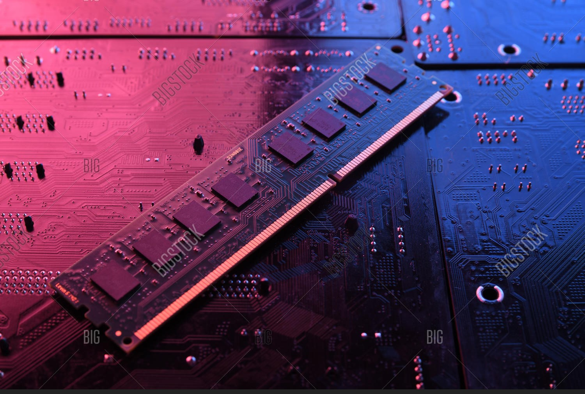
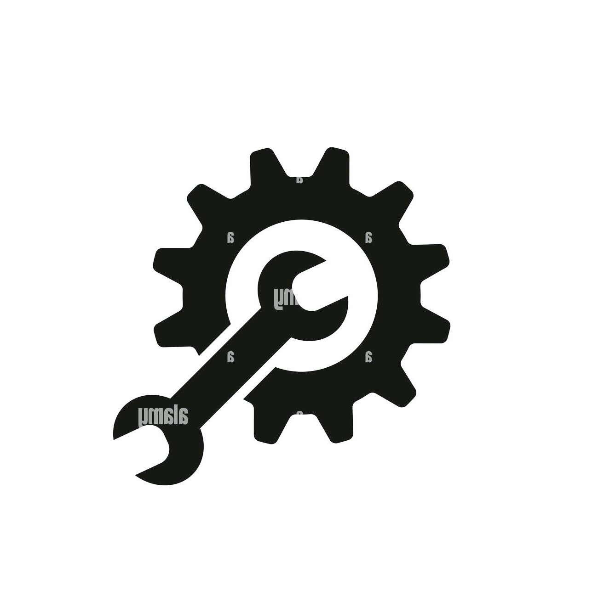
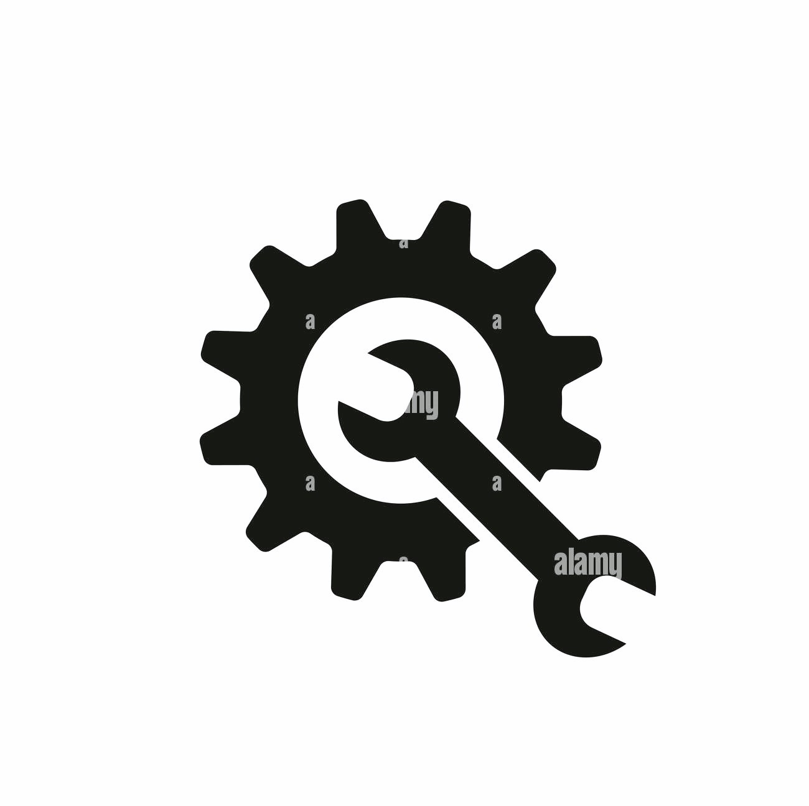
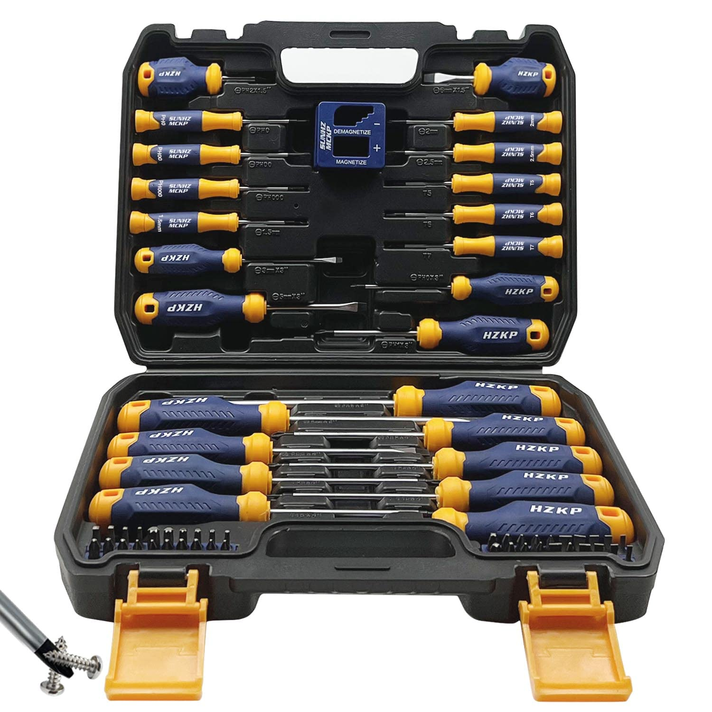
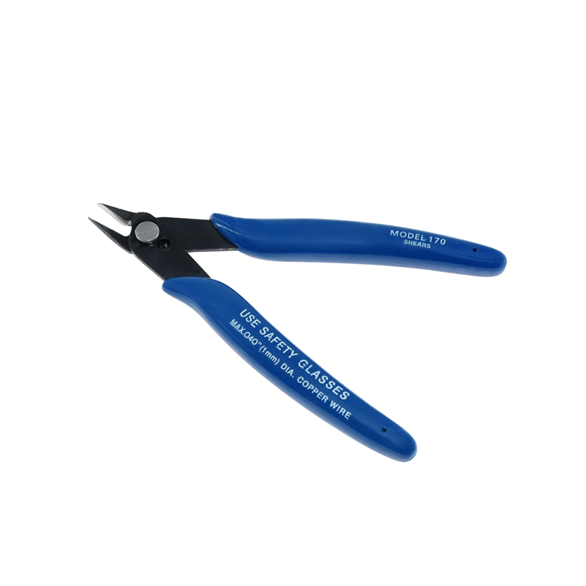
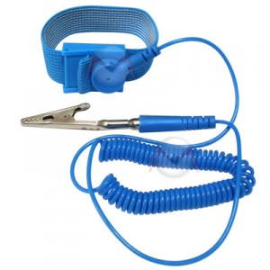
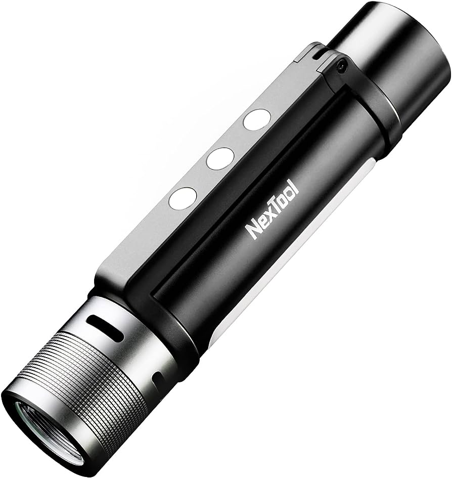
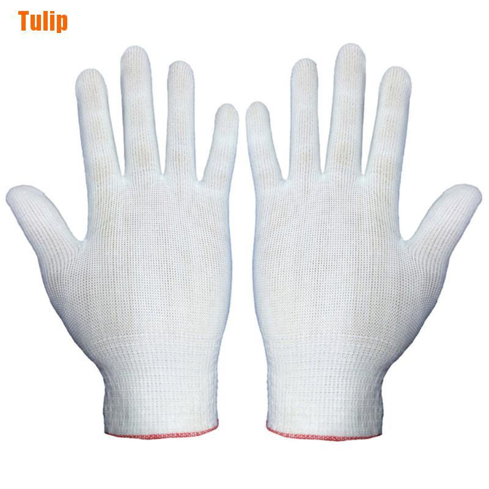
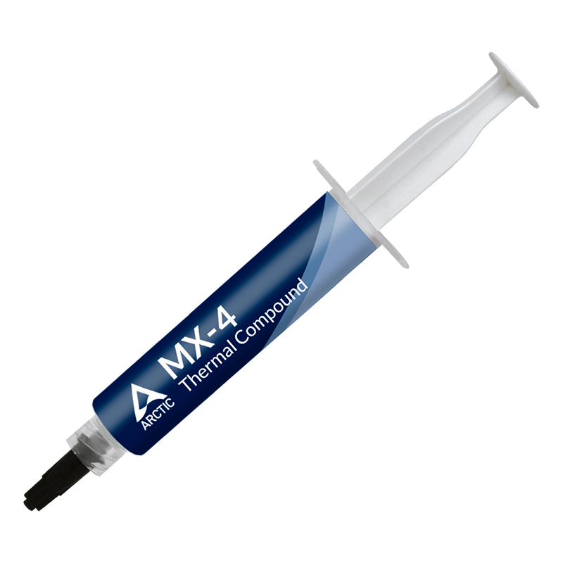

La tecnología se ha convertido en una parte fundamental
de la cotidianidad, tanto a nivel laboral como doméstico. Nosotros
como nuevos programadores con nuestras hablidades les enseñaremos a
hacer una mantencion de armado y desarmado muy divertida y eficaz.


hay muchos tipos de herramientas para poder hacer un
mantenimiento de armado y desarmado


Los destornilladores son la pieza más importante de las herramientas que necesitas para montar
un ordenador ya que tienen muchos tipos, formas y son
absolutamente imprescindibles

Los alicates de corte son muy importantes para este
trabajo que sirven para quitar bridas o simplemente por su comodidad

Estas pequeñas y económicas pulseras electroestáticas nos eliminarán toda la electricidad estática para evitar
que estropeemos alguna pieza de nuestro futuro ordenador.

Las típicas linternas que se sujetan con una goma en la cabeza son muy útiles si no hay nadie que pueda echarte una mano y alumbrarte de
vez en cuando, aunque no es imprescindible tener una.

Para evitar la electricidad estática o la suciedad en las manos(son opcionales)

Su función es conducir el calor entre dos piezas y solo se necesita poquito mas
de una gota